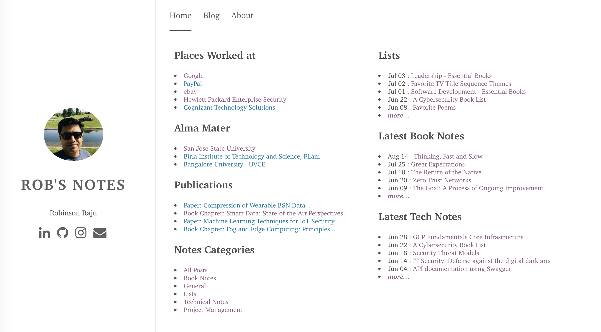
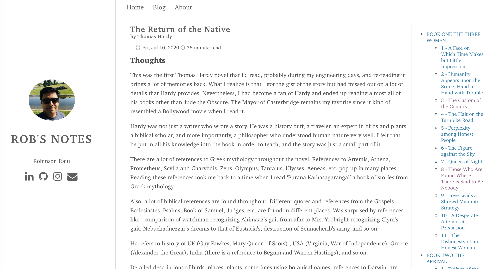
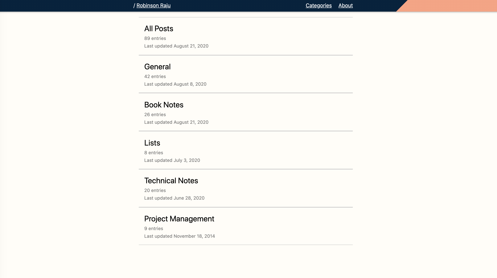
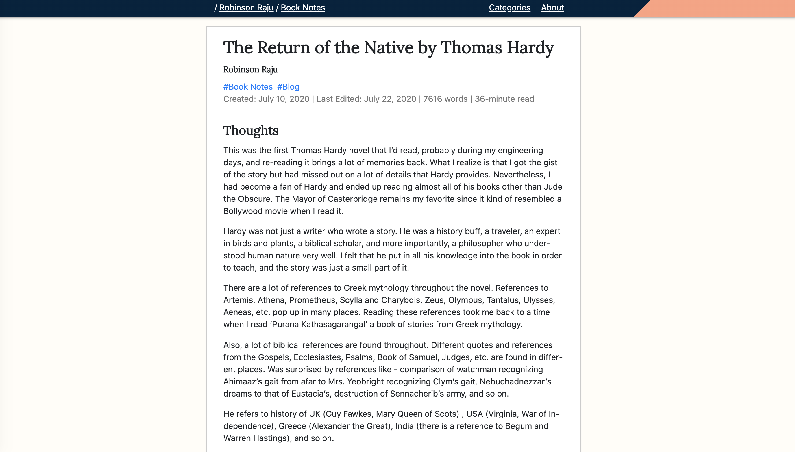
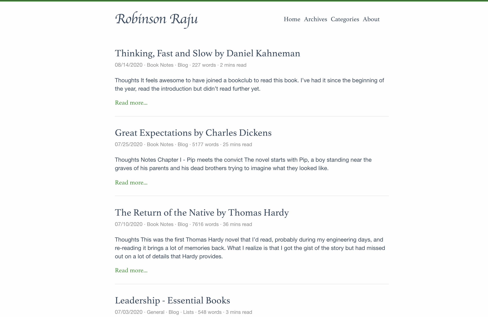
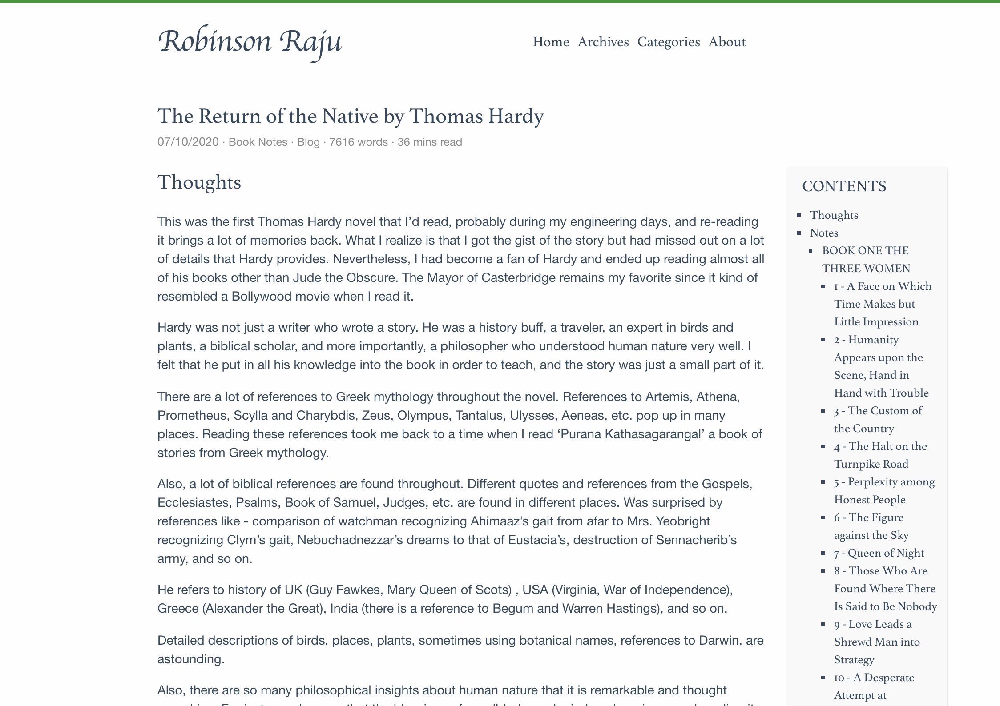
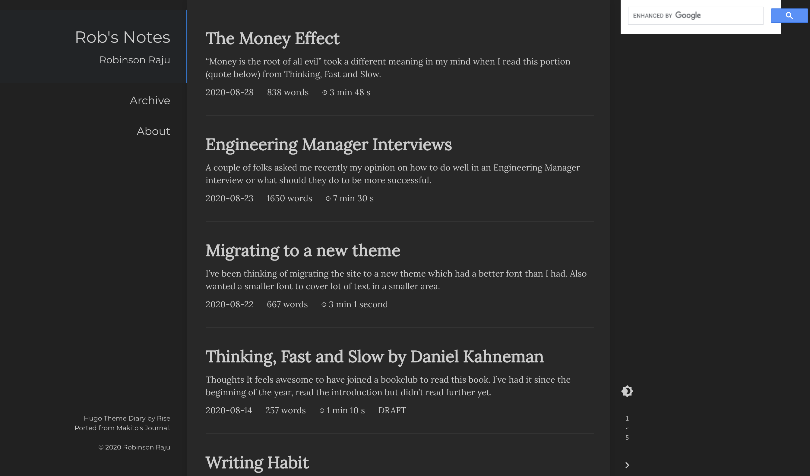
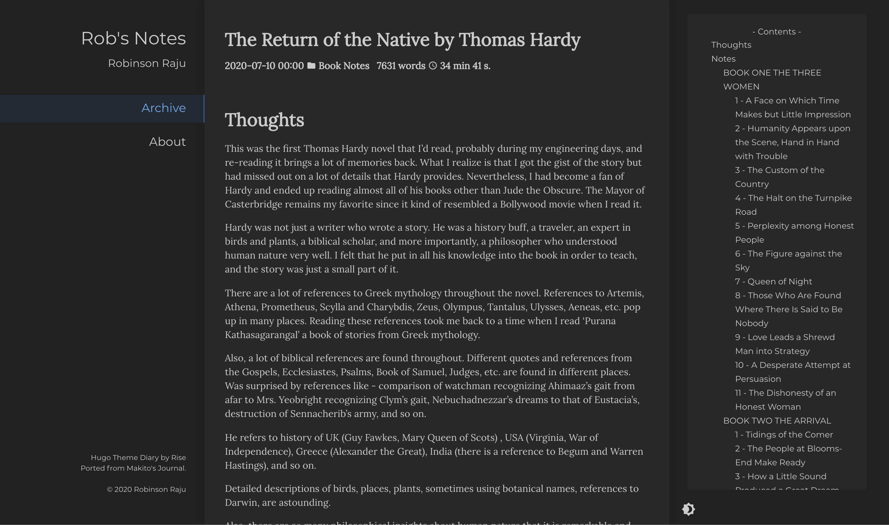

I’ve been thinking of migrating the site to a new theme which had a better font than I had. Also wanted a smaller font to cover lot of text in a smaller area. Stumbled upon paperesque theme on hugo themes site. It was a simple theme with lot more focus on writing.
So, spent some time migrating to the new theme. It is cloudy outside due to the forest fires on Mount Diablo. It seems like winter and somehow looking out of the window and seeing an overcast sky seems to be the perfect weather to write/read or do this work.
Trials before the migration
Before the actual migration, I thought I will try out a few themes to see if something else appealed. Tried the following - bilberry, kube, loveit, mediumish, zzo. Created a new site for each (which is as easy as hugo new site abc) and added the theme there. Then copied over some of my articles to see if it worked. Some of them did, some of them didn’t, some of them didn’t look the way I expected.
One thing about migration of any software is that one always enters into it with optimism, thinking that it is going to be simple, just a few minutes of work of swapping one thing for another. That’s probably why most migration projects run over budget. Many times new things are discovered only after one starts the work. But it is fun, challenging and engaging work. While doing it, one might feel like it is a time sucker and want to give up but if you keep at it, the end results are quite satisfying.
Migration to paperesque
Few issues that I had to fix were the following. There was a JS error during build that I temporarily fixed by removing it from head_includes.html. There were a few shortcodes that I had created in the aurora theme that I had to bring over. Spent some time figuring out how to change the home page. Tried to use the old style of two columns with a lot of links. Then decided against it. Wanted to put that content into about.md. Was wondering how to do that and then realized that the easiest way to embed HTML into markdown file is to create a shortcode. Shortcode is a super-power in hugo. One can do a lot of wonders using that. Also, spent time figuring out how to add social media buttons on the About page. W3 schools has the easiest example to embed social media buttons.
Next day edits - New migration to Even
After having the site set up with this theme, I wasn’t quite happy. The original intent was to move to a theme which put the blog posts in the front. This one still had the earlier issue of a user having to navigate to the actual post by clicking twice. So migrated to another theme that I had tried in the past. I didn’t have to do much for this. It had a bigger feature set than what I wanted though it didn’t have the beauty of paperesque. One thing that attracted me to theme Even was the Table of contents on the right side with highlights of the section that I was reading. So spent some more time migrating to the newer theme.
Edits after a week - New migration to Diary
The more I looked at the site, I thought the older theme was probably better. Still think that a left nav with some static details, central body with text and a right have with dynamic toc is better. At least for desktop viewing. The theme Diary gave these. Though it doesnt have social media icons, I thought it was cleaner and better. I could add the social media icons later.
Here are some screenshots of ‘the before and after’ of the current migrations.
Previous Site
Home Page

A blog post

New Site

A blog post

New Site #2

A blog post

Current Site

A blog post
